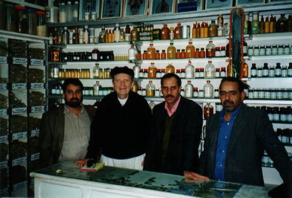

The World Health Organization (WHO) finds that traditional medicine has maintained its popularity in all regions of the developing world, and is spreading rapidly in industrialized countries for preventative and palliative care. Worldwide, $60 billion is spent per year on traditional medicine, $17 billion in the U.S. alone (Traditional, 2003).
This essay will focus both on Islamic Medicine and a trip we made to Morocco in 1998. Yes, this is the same country that has an outpost in Epcot Center, and that was brought to public attention half a century ago in a Hope-Crosby-Lamour film, "The Road to Morocco". Contemporary Morocco is one of the most open and stable countries in the Arab world. Two years after our visit, King Hassan II passed away and was succeeded by his son, Mohammed VI whose attempts at social betterment have already earned him the sobriquet, "The King of the Poor". Some 70 percent of the population are under the age of thirty, providing an impetus for societal change. Time will tell.
Our expedition was initiated by Hassan Amir, a Saybrook alumnus who wanted us to meet several sheiks (i.e., spiritual counselors) who claimed to work with jnun, the plural form for jinn (also spelled djinn, and known in Western popular culture as "genie"). Jnun, or jinns (to use the Anglicized term) are legendary creatures who are very much alive today, at least in the imagination of those who call upon them for healing, succor, and good fortune. They also live on for unfortunate believers who attribute bad luck and misfortune to their interventions. They exist below the level of both angels and devils, and have been featured in literature since the appearance of the classic anthology, The Arabian Nights. More recently, "genies" have been featured in the Walt Disney movie, Aladdin (with Robin Williams playing the role of the blue "genie"). In addition, Barbara Eden played the role of a "genie" in a long-lasting television sitcom, "I Dream of Jeannie".
In Arabian and Muslim folklore, there are a variety of jinns. The most powerful is the jinn of Iblis, the "prince of darkness". Iblis is not equivalent to Satan, from Christian folklore, because Satan is described as a "fallen angel". In Islam, there are no fallen angels. However, Iblis disobeyed Allah's commandments and was denied contact with Allah. Angels are mentioned several times in the Holy Quran and in Islamic tradition. It was the Archangel Jibril (called Gabriel by Christians) who conveyed the Quran to Mohammed, the Gospel to Jesus, and the Torah (Tawran in Muslim tradition) to Moses and Abraham. Gabriel told Mary (or Miriam) that she would give birth to Jesus (or Essa).
The Western medical diagnostic process includes consideration of invisible entities such as microorganisms, but has no counterpart to jinns or similar tricksters and helpers. Islamic Medicine is an intriguing example of traditional medicine because it addresses the positive and negative potentials of jinns at the same time it includes concepts and practices that are highly sophisticated. Islamic medical practice is a combination of several practices that emerged shortly after Mohammed had established Islam as a dynamic and powerful movement throughout the Middle East in the 7th century CE. The first public hospital dispensing treatment freely to all opened in Baghdad in 809 CE. Soon thereafter, every major Muslim city had such a hospital, and each was also a teaching institution and research center. Both state funds and private donations supported them, and they were clearly superior to comparable institutions in Christian Europe.
The medical encyclopedia of Abu al-Qasim al-Zahrawi (who lived from 936-1013) illustrated surgical instruments of such sophistication that they can easily be recognized as the forerunners of the set used today by Western physicians. Ibn Sina (980-1037) wrote the Canons of Medicine, a standard text for centuries thereafter, even among non-Muslims. Treatises on specific diseases set new standards. For example, the physician and scientist al-Razi (854-935)described smallpox in great detail. In 1716, the wife of a British diplomat in Istanbul wrote about Muslim physicians' use of weakened strains to insure immunity; Edward Jenner (1749-1825) did not make this discovery until later.
The Siegler-Osmond Model
Comparisons between Western biomedicine and traditional medicine such as Chinese, Ayurvedic, and Islamic practices can be made utilizing hypothetical structures such as the 12-faceted model proposed by Miriam Siegler and Humphry Osmond (1974). In the social and behavioral sciences, a "model" is an explicit or implicit explanatory structure that underlies a set of organized individual or group behaviors. Their use in science attempts to improve understanding of the process they represent. Models have been constructed to describe human conflict, competition, and cooperation. Models have been proposed to explain mental illness, personality dynamics, and family interactions. We have modified the Siegler/Osmond model, making it applicable to both "physical " and "mental" disorders, although traditional practitioners usually do not differentiate between the two. The utility of the Siegler/Osmond model can be demonstrated by comparing a shamanic medical model, an eclectic folk healing model, and the allopathic biomedical model on 12 dimensions. The 12 parts of the model are:
Diagnosis
Etiology
Patient's behavior
Treatment
Prognosis
Death and suicide
Function of the institution
Personnel
Role of the patient
Role of the family
Role of the community
Goal of the model.
The utility of the model can be demonstrated by applying it to traditional Islamic Medicine.
Diagnosis is done on the basis of both internal and external examination.
Etiology is based on the "humors"; there are two types of sickness—of the heart and of the body.
The patient's behavior is observed; e.g., unusual cravings are symptomatic of a disorder. The practitioner is especially alert to nightmares, convulsions, and other signs of "possession", i.e., a malevolent jinn's intrusion into the patient's psyche.
Treatment can be natural, spiritual, or both, e.g., "cupping" the afflicted area, prescribing dates, honey, and herbs, exorcising cases of "possession",asking the patient to perform a zekr (i.e., repeating the 99 attributes of Allah), using protective amulets or charms that include inscriptions of verses from the Holy Quran. Sheiks can treat themselves with the aid of sacred texts, but there are hazards to this practice. It is advisable that they go to another sheik for treatment.
Prognosis depends on how well the patient follows instructions and the nature and severity of the problem.
Premature death is especially adverse if it comes before the patient performs the required pilgrimage to Mecca. Suicide is a sin.
Institutional settings include hospitals and clinics. Their role is to provide a spiritual site for restoring the health of the patient. Sheiks and other traditional practitioners often play a role in these institutions, but that role varies from region to region.
Practitioners include hakims (spiritual healers), sheiks (spiritual advisors), herbalists, surgeons, orthopedists, and exorcists; often, their functions overlap, especially in the case of hakims and sheiks. A faqui is a sheik who is also a scholar. The word means "poor"—the connection being that the more one knows, the more one realizes one's poverty of knowledge. (The English word "fakir" might have been derived from this term.) All the practitioners operate from a spiritual base and they often work together in various combinations, depending on the traditions characterizing their locale.
The role of the patient is to follow instructions and to prevent a recurrence of the problem.
The role of family members is to feed the ailing patient nourishing foods, and to help in preventing the spread of the sickness.
The role of the community is to make qualified practitioners available, and to visit those who are sick.
The goal of Islamic medicine is the preservation of good health, combatting disease, and restoring health to the sick. Sufism, the mystical aspect of Islam, adds that healing must help patients attain a state where they function harmoniously with the universe, because people are cosmic beings as well as social and biological beings.
The Role of Jinns
Jinns are mentioned several times in the Roman Translation of the Holy Quran. For example, in Chapter 72, "a company of jinns" is described listening to sacred script. They said, "We have really heard a wonderful recital! It gives guidance to the Right'". This group of jinns spread the word among their fellow jinns; some believed and some did not believe. It is this latter group who tries to lead humans astray.
Jinns are invisible beings who share the earth with humans, and belief in them is especially prevalent in Morocco (Davis & Davis, 2002). Female jinns (more properly, jinniya, the female plural) have been known to "possess" humans, but they give themselves away by their feet, which resemble those of goats or cows. Men "possessed" by jinniya can be rescued by the Hamadsha, or other curing groups who use musical performances and sacrificial rituals (Crapanzano, 1973).
There are Muslim jinns and non-Muslim (e.g., Jewish and Christian) jinns. Some jinns are benevolent and some are malevolent. The evil ones may enter the body through any one of the five orifices, often going straight for the head to drive their victim mad. The helpful ones can be persuaded to grant favors and wishes. Some writers claim that the jinns' tendency to enter a person's mouth or nose has led to the practice of covering one's nose or mouth when yawning or coughing (Crapanzano, 1973, p. 112).
The Sheiks of Agadir
Upon our arrival in Agadir on 10 December 1999, we stopped in a coffee shop for our first appointment with a sheik, a spiritual advisor who, in Morocco, often gives medical advice as well. In fact, this sheik had a cell phone and told us that he made house calls. He would not let us use his name, but spoke freely about the jinns who, he claimed, had been created from fire (in contrast with humans who were created from the earth). He told us that there were two ways of manifesting jinns. For a fee of $3,000 he would manifest a jinn from the palm of someone's hand, or would recite a specific verse of the Quran several times, taking a person into an altered state of consciousness in which the jinn would appear.
Later the same day, we had an appointment with another sheik, Fawadane Mohammed M'bark, a 70-year-old Bedouin with 45 years of counseling experience who claimed that he had been certified by a governmental religious board. He began his discourse by stating that "purification of the heart leads to gifts from Allah".
This purification consists of healthy living, loving relationships, direct person-to-person communication, and sound business practices. His family line goes back to the Prophet Idres; teachings have been passed along the male line of the family with young men being tutored by their grandfathers. We were informed that clients come from all over Morocco to consult with him, as well as from France, Italy, and Saudi Arabia.
M'bark informed us that Allah sent 113 prophets to spread the words of the Quran to all tribes and all people. He often finds himself playing the role of a mediator between married couples. It is usually the wife's mother who reports the conflict; M'bark often finds an appropriate verse in the Quran, passing this along to the mother, who then gives it to her daughter who, in turn, mixes the paper with milk, juice, or coffee. This mixture is fed to the family of the husband. If the husband has not abused his wife, the family is told the contents of the mixture; if he has been abusive, the mixture is fed them without their knowledge. In addition, he engages in pre-marital counseling and will give advice on the match. Occasionally, he will assist a man attract a woman's interest "if that man is a good person".
M'bark also engaged in business consulting. If an item is not selling, he will give the merchant a verse from the Quran and this is generally hung over the door of the shop. It can also be placed on the merchant's left arm; however, if there is an item that is not to be sold, the verse is placed on the right arm. M'bark deals with a variety of health problems, most notably diabetes; if a physician has diagnosed someone as a diabetic, M'bark prepares a special tea made from fig tree shoots to assist recovery.
When people come to him, their "destiny" determines whether or not they need his help. He insists that his clients try to help themselves, only coming to him when their own efforts have been exhausted. Then he listens to their story, and will tell them whether or not he can be of assistance. If so, he uses both Muslim and Indian astrology to learn about the client's temperament. He has worked with foreigners, as long as they manifest faith in God. When we asked about jinns, he told us that some sheiks work with these entities but he has not found them to be reliable allies. Further, the assistance they give is not long lasting. His concluding remarks were, "Ignorance is the enemy of humanity; people should keep seeking knowledge until the moment of their death". We were quite impressed by Fawadane Mohammed M'bark, and his commitment to ethical principles; for example, he told us that he would not refer us to practitioners whose work with jinns relied on the use of negative forces. His work is only with what he called "positive energies" and with the Holy Quran.
Three Sheiks of Aligar
The next day we arrived in Aligar, and our colleague had arranged a series of appointments with local sheiks who were knowledgeable on the topic of jinns. The first was Bounamt Haj Ahmed of the St. Akouchar Agency of Medical Plants. He had no hesitation in telling us that some sheiks use the services of jinns simply to "play games", others for "financial gain", and still others "to serve spiritual purposes". He described two types of jinns: "There are those who help and heal people, and those who hurt people or play tricks on them". He cited the example of a jinn who hit a client when he was sleeping, leaving him with a dislocated jaw; however, Ahmed recited a verse from the Quran, and the jaw returned to its normal state. If one encounters a malevolent jinn while awake, less damage can be done.
Ahmed acknowledged that negative jinns can "possess" someone, either completely or partially. In the latter instance, his clients complain about "hearing voices in their head" or manifest what Western psychotherapists would term visual hallucinations, depression, obsessions, or anxiety. Surprising to us was the news that not all jinns are of the same religious faith. The Muslim jinns appear dressed in white and have a clean appearance; these jinns are the wisest and the most articulate. There are also Jewish, Christian, and "infidel" jinns; the latter have no religious principles, are "dirty", are dressed in black, and are the most dangerous. Some jinns live in the air or on the earth (generally in caves), while others live in water or even in fire, the place of their origin. They enjoy living near gold or hidden treasure. Jinns are especially sensitive to hot water; if this is thrown at them, the perpetrator is bound to suffer revenge.
The next two sheiks came together and were part of the Inezgane family; their practice was part of this "family business". The Inezganes claimed to work only with the good jinns, and both had spent several decades in their profession. However, they observed that we had arrived on a Friday, the one day of the week that no jinn-related activities could be conducted. They confirmed that jinns can live in a variety of locations, but all of them exist in a "parallel universe" where they have their own kingdoms and their own laws. Jinns were created 1,000 years before the advent of humans; both were brought into existence to worship Allah. King Solomon was acquainted with jinns, especially those who live in the sea. When the king died, he is said to have remained on his throne for 200 years because physicians were reluctant to examine him, fearing the wrath of his jinn allies.
Jinns are less intelligent than humans and occupy themselves by working in simple trades. However, when they appear to humans, they can change their forms, appearing as animals, birds, snakes, or even as humans. In the latter case, they have been known to marry naive humans and the female jinns bear their children. Some of them are eager to learn what humans know and will follow someone around constantly, especially if that person is weak and offers little resistance. Because they are able to fly, one can not escape a jinn by travelling to another location. Jinns subsist on bones, blood, leftover human food, and pungent smells. They are especially partial to bedrooms and bathrooms because the smells nourish them; in addition, they enjoy watching people have sex, which is why Muslims cover themselves during intercourse. Sometimes, jinns will try to join the couple during intercourse, but the couple only need to say the name of "Allah" to repel them.
Jinns typically live in the sea, air, and earth, but some prefer volcanoes and hurricanes. When people report having ihlam or the "sixth sense", they do not know if it is a gift from Allah or a gift from the jinns. Sheiks can make this determination, and give counsel on its use. Jinns can live for hundreds of years and have souls that survive their eventual death.
Two More Sheiks in Aligar
The sixth sheik we visited, Alkadie Al-Hussein, was a member of the Berber tribe and had been practicing for 10 years. He told us he represents the fourth generation of sheiks in his family. Al-Hussein worked out of his private office; although small, it had room for a television set and his banjo. He showed us his palm and traced the figure 8, noting that people with this configuration can see jinns more easily. Al- Hussein works with palmistry as well as with the Quran and the benevolent Muslim jinns. The latter entities "carry the message of the Quran" to his clients, especially when interpersonal relationships are in need of improvement. It is no easy task to summon a jinn; Al-Hussein must recite the appropriate verses from the Quran for seven days before they appear. On the other hand, he protects people from bad jinns by giving them appropriate verses from the Quran. However, in cases of epilepsy, brain cancer, and schizophrenia he is too late; the malevolent jinns have already wreaked havoc with a person. Some jinns will "possess" a person who refuses to have sex with them; others will do it because of their fascination with all things human.
Al-Hussein's clients come to him for advice on love, business, health, and interpersonal "communication". The most common problems stem from marriage or business. Less often, he will see people suffering from "partial possession", which results in personality problems and impaired work abilities. Typically, he will take the name of a client, count the number of letters, mix the letters with the name of Allah, and then make numerical calculations with the results. These numbers are translated into specific verses from the Quran, which form the basis for treatment. The writing of the Quran verses has become Al-Hussein's specialty.
Mujarhib Mafour Mubarak was the final sheik we visited. His office was small and humble, with a cluttered table in its corner, two weathered easy chairs, and a photo of his grandfather on the wall. He was very proud of his small library; one book he showed us was a treatise on "the beauty of wisdom" and the other was the classic Ibn Sina text. Mubarak's practice, as he described it, is very comprehensive, ranging from marriage counseling to business concerns, to health problems. He declared, "If a sheik has the determination and intention to improve a situation, he will be successful. Not everyone can do this type of work well, and their clients must work hard as well". He remarked that Friday was the "holiday" for jinns so we could not expect to observe any sheik working with these entities. When a sheik works with a helpful jinn, the dialog is not perceptible to outsiders; sometimes the sheik reasons with the jinn, sometimes he bargains, and sometimes he cajoles. It is important that the sheik keeps his priorities focused and does not let the jinn distract him.
In the jinn kingdom each day of the week honors a special jinn. Mubarak named them as Mamoun (Saturday), Mudhab (Sunday), Alakhmar (Monday), Marah (Tuesday), Barkah (Wednesday), Shamharush (Thursday), and Albiad (Friday). Again, we were told that King Solomon worked with jinns; according to Mubarak, Solomon's mother was a jinn. Only sheiks and similar practitioners can see jinns, but they can perform special procedures making it possible for their clients to see them if this would serve a positive purpose. Mubarak told us that for $1,500 he could produce a jinn for us, but it would have to be on another day of the week.
Mubarak includes dream work in his repertoire of skills, describing two types of dreams. One type reflects daily concerns while the other type is produced by jinns and includes nightmares, dreams of being chased or attacked, and dreams that are "wish fulfillments". When a jinn "possesses" someone, it lives in that person's blood. Some people have attained the "sixth sense" without the help of jinns; these individuals often become faqui or scholars. Most scholars rely on "book knowledge", but when it can be supplemented by ihlam, the combination of reason and intuition can produce remarkable insights. He added, "However, all human knowledge is like a drop in the ocean". This modest evaluation of human capacities is the reason that Mubarak depends upon the Holy Quran for direction. He stated, "All my cures are in the Quran".
Discussion
Western psychotherapists often are called upon to treat patients with belief systems considerably different from their own. Ethnic minorities often harbor explanations of their sicknesses that are quite different than those put forward by a psychological therapist or psychiatrist. For example, post-traumatic nightmares nearly two years after the Iraqi invasion of Kuwait were recorded by one team (Barrett & Behbehani, 2003). Children interviewed by the team were even more likely to report repetitive nightmares (p. 139).
In a world that is becoming increasingly multi-cultural, it is important that therapists become acquainted with the mythologies that their patients bring along to the therapy session. Furthermore, there are interesting parallels between the appearance and behavior of the jinns and those of goblins, leprechauns, and UFO aliens.
The Western psychotherapeutic literature contains several articles that describe cases of mental illness attributed to jinns. For example, Mohia (1986) described a case of "jinn hysteria" in which a 23-year-old woman whose delirium and agitation was attributed to "possession" by a jinn, and how the psychotherapist worked with the patient with this attribution in mind. Bilu (1979) described the plight of two Moroccan Jews living in Israel who were convinced that jinns had evoked a malady named sira, marked by somatic disturbances and symptoms of anxiety. And in 2000, a Pakistani newspaper reported that a 17-year-old girl had eloped with a jinn (Anonymous, 2000).
Some Arabian traditions categorize jinns into ghul (shape-shifters), ifrit (evil spirits), and sila (trickster spirits) (Coleman, 2002). However, one of the surprises of our short visit was the discovery that the sheiks we interviewed felt that many jinns were benevolent, and could be useful in treating patients, while other jinns who were less compassionate could be exploited with the proper magical procedures. It was our misfortune that we had to leave Aligar for Fez on Saturday morning; furthermore, our budget could not cover the costs involved in persuading a jinn to join us on the Road to Morocco.
But there was an unexpected turn in the road when we came across a book written by Ken Wilber (1991), Grace and Grit, in which he describes the fatal illness of his wife, Treya, and her search for her daemon. This Greek word describes "the god within", one's inner deity or guiding spirit, also known as a djinn or genie once the Arab world became the custodian of the Greek classics. According to Wilber, this daemon or djinn "is indeed one's guiding spirit; those who bear a god within bring genius to their work. When, however, one's daemon is heard but unheeded, it is said that the daemon becomes a demon, or evil spirit—divine energy and talent degenerates into self-destructive activity" (p. 58).
As is often the case with ancient myths, one can find direct applications to one's daily life. Our search for jinns on the road to Morocco culminated in a renewed acquaintanceship with our inner jinns, the guiding spirits that have helped us find our life's direction. And we managed this for much less than a thousand dollars per session. We learned that in Morocco, every price is open to negotiation—even the price of self-knowledge.

References
Anonymous. (2000, November 16). Jinn elopes with 17-year-old girl. The Friday Times (Pakistan), p. 10.
Barrett, D., & Behbehani, J. (2003). Post-traumatic nightmares in Kuwait following the Iraqi invasion in 1990. In S. Krippner & T.M. McIntyre (Eds.), The psychological impact of war trauma on civilians: An international perspective (pp. 135-243). Westport, CT: Praeger.
Bilu, Y. (1979). Demonic explanations of disease among Moroccan Jews in Israel. Culture, Medicine & Psychiatry, 3, 363-380.
Coleman, P. (2002, April 6-7). Djinn and tonic. The Fortean Times, pp. 147-148. Davis, S.S., & Davis, D.A. (2002). Possessed by love: Gender and romance in Morocco. Retrieved from http://www.haverford.edu/psych/ddavis/romance.html.
Mohia, N. (1986, June). The hysterical person and the jinn in love: Ethnopsychoanalytic reflections on a case of possession of a Kabyle by a jinn (in French). Cahiers de Sociologie Economique et Culturelle, pp. 97-114.
Morgan, G. (1996). The devil: A visual guide to the demonic, evil, scurrilous, and bad. San Francisco: Chronicle Books. Roman Translation of the Holy Quran. (3rd ed.). (1938). (A. Yusufali, Trans.). Lahore, Pakistan: Mr. Muhammed Ashraf. Siegler, M., & Osmond, H. (1974). Models of madness, models of medicine. New York: Macmillan.
Traditional medicine fact sheet updated by WHO. (2003). Alternative Therapies, 9 (5), 21.
Wilber, K. (1991). Grace and grit: Spirituality and healing in the life of Treya Killan Wilber. Boston: Shambhala.
Preparation of this paper was supported by the Chair for Consciousness Studies at Saybrook Graduate School and Research Center, San Francisco, CA.